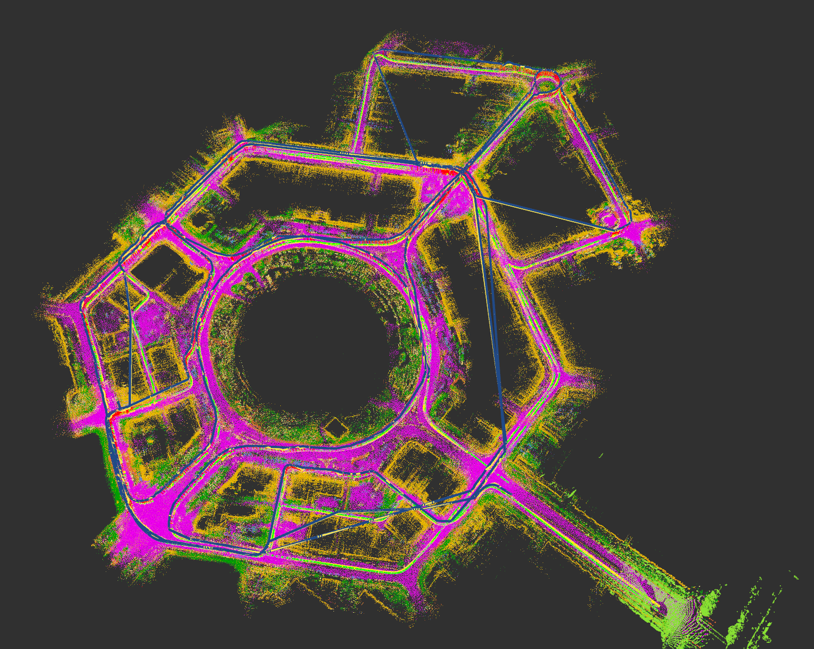

World Model for Robotics
Latent dynamics models for robot-environment interaction — prediction, planning, and policy optimization with less real-world interaction cost.
B.Eng. in Communication Engineering at Southwest Petroleum University. Focused on robot planning & control, state estimation, NMPC, and RL sim2real. Aspiring to research world-model-based RL, VLA/embodied intelligence, and learning-based control for real-world robots.
Bridging classical control, state estimation, and optimization with world models, reinforcement learning, and multimodal policy learning — to improve generalization, robustness, and safety in complex open environments.
Latent dynamics models for robot-environment interaction — prediction, planning, and policy optimization with less real-world interaction cost.
Vision-language-action models for robot task planning, motion generation, and closed-loop control.
Combining NMPC, LQR, dynamics modeling, and PPO for deployable, interpretable, and safety-constrained robot control.
Humanoid PNC, autonomous navigation, wheel-legged RL control, and semantic LiDAR global localization.

Courses: Digital Signal Processing, Algorithms & Data Structures, Information Theory, Communication Principles, Digital Electronics. CET-4 563, CET-6 483.
Developed humanoid robot PNC system: Lattice local planner, SFC safe corridor, and NMPC real-time controller.
RoboMaster 2025: Regional 1st Prize, Radar Group 1st Prize, Sentry Group 2nd Prize. 2024 China University Intelligent Robot Creative Competition: National 3rd Prize.
A*, JPS, Hybrid A*, RRT, Informed RRT*, MINCO, Minimum Snap/Jerk, Acados, OSQP, IPOPT
NMPC, MPC, LQR, PID, Lagrange / Newton-Euler dynamics, convex optimization, BFGS, L-BFGS
Bayesian filtering, ESKF, multi-sensor fusion, factor graph optimization, LiDAR odometry, semantic SLAM
C++, Python, MATLAB, ROS/ROS2, Linux, Docker, Git, PyTorch, Isaac Gym, MuJoCo, Gazebo, PPO